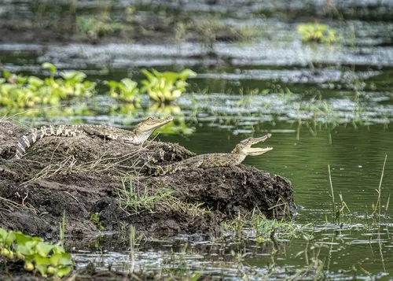

爬行动物 · 动物界
暹罗鳄 Crocodylus siamensis

分布于东南亚的中型鳄类，吻部较窄，因栖息地丧失和捕猎而濒危，中国境内的人工种群多来自养殖场。
- 分类
- 门脊索动物门纲爬行纲目鳄目科鳄科属鳄属
- 栖息环境
- 东南亚的缓流河流、湖泊、沼泽与湿地
- 地理分布
- 泰国、柬埔寨、越南、老挝、缅甸等东南亚国家
- 保护级别
- IUCN 极危（CR）；CITES 附录 I；非中国原产
物种志
暹罗鳄体长通常 2.5–3.5 米，雄性略大于雌性，吻部较窄，背面呈橄榄绿或灰褐色，幼体身上有明显的黑色横纹，腹面淡黄，四肢粗壮，尾部侧扁。它喜欢在缓流的河流、湖泊与沼泽中生活，常一动不动地浮在水面，只露出眼睛和鼻孔观察四周。
它分布于泰国、柬埔寨、越南、老挝等东南亚国家的淡水水域，以鱼类、蛇、蛙和小型哺乳动物为食，多在夜间捕猎。每年雨季前后繁殖，雌鳄用植物枝叶堆筑巢丘，产卵约 20–50 枚，孵化期约 80 天，幼鳄出壳后由母鳄照料。由于湿地开发、养殖捕捉和非法贸易，野生暹罗鳄数量大幅下降，被列为极危物种；它也是鳄鱼养殖业的主要物种之一。
形态与习性
- 食性鱼类、蛇、蛙和小型哺乳动物
- 体长通常 2.5–3.5 m
- 体重约 150–300 kg
- 寿命约 40–50 年
- 繁殖卵生，每窝 20–50 枚，孵化约 80 天
- 活动节律夜行性，白天常在水边晒背
- 威胁湿地开发、养殖捕捉与非法贸易
趣味知识
- 暹罗鳄幼体身上有明显的黑色横纹，长大后逐渐变淡。
- 它的吻部比湾鳄窄，适合在较浅的水中伺机捕鱼。
- 中国境内见到的暹罗鳄多为养殖场逃逸个体，野外并无自然分布。